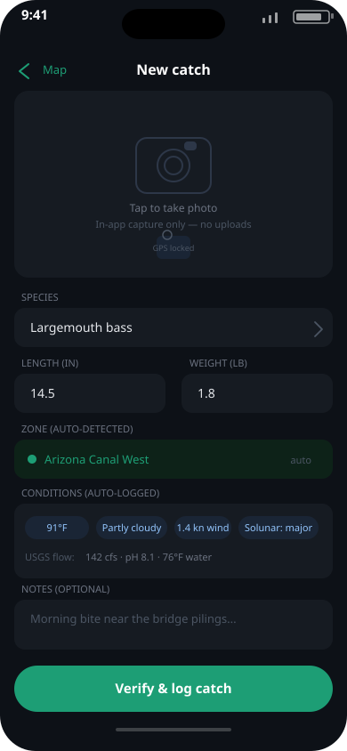
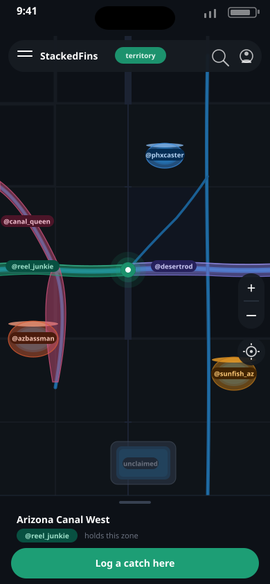

StackedFins
Territory-Capture Fishing App — Junpyo Kim · AI & Data Science · University of Advancing Technology
Problem Statement
Anglers fiercely guard productive fishing spots, yet they are intensely competitive and possessive about them. Existing apps force a trade-off: social catch-logging apps create competition but expose spot locations, while tournament apps protect spots but confine competition to organized, time-boxed events. No current app turns that rivalry into everyday engagement without exposing those spots to other users — or sharing any user data between anglers.
What StackedFins Does
A mobile app that divides Phoenix-area waters into fixed geographic zones, verifies catches through in-app geotagged photos, and awards displaceable, username-only zone ownership to the angler with the most verified catches.
Catch Journal
In-app camera capture ties a live geotag and timestamp to every catch, making the record difficult to fake. Uploads from the photo library aren't permitted.
Territory
Whoever holds the most verified catches in a zone "owns" it. The map shows only the owning username — never catch counts or pin-level coordinates — and ownership is displaceable.
Public Data Enrichment
Each angler's own catch history is correlated against public USGS water readings, solunar tables, and weather data to surface personal fishing patterns — never against other users' data.
Privacy by Design: No catch data is ever shared between users. The MVP analyzes only the angler's private log against public data — no AI-driven analysis or note-taking in this phase; that's a stretch goal if time remains after the core build.
What's Being Built
A working mobile MVP for the City of Phoenix's canals, urban ponds, and lakes that lets an angler log verified catches, hold zone ownership, and review personal patterns against public environmental data.
MVP Scope
- Verified catch logging (in-app camera + GPS)
- Username-only zone ownership for Phoenix waters
- Personal pattern stats from USGS, solunar & weather data
- Out of scope: AI-assisted analysis/note-taking (stretch goal post-MVP), cross-user data sharing, catch prediction
Budget & Resources
Minimal budget — free public data (USGS, solunar, NOAA) and open-source tooling; est. ~$150 for developer accounts and map-tile/API tiers, using existing UAT lab resources. Backend in Python with SQL/SQLite & NoSQL storage. Mobile frontend in React Native.
Development Timeline
Design & Zone Segmentation
Project planning, zone segmentation design, and public data source integration planning.
Verification & Ownership Engine
Build the in-app catch verification system, GPS/geotag capture, and the displaceable zone-ownership engine.
Personal Analytics & Polish
Integrate USGS, solunar & weather data into personal pattern stats; polish the MVP.
SIP Showcase Demo
Working MVP demo at the SIP Showcase.
Tools & Technologies
This project draws on cross-platform mobile app development with geospatial data and public-data integration.
Technologies & Skills
Relevant Coursework
Who This Is For
StackedFins creates value by delivering competitive clout and a smarter catch log — without exposing the spots anglers protect.
This project is intended for tech-comfortable, competitive recreational freshwater anglers in the Phoenix metro who want recognition and a smarter log without sacrificing the spots they protect.
Primary Demographics
- Status-driven, community-oriented anglers
- Protective of their fishing spots
- Already comfortable with gamified fitness apps like Strava
- Secondary: fishing guides, local tackle shops, and tourism partners
Generational Context
- Skews Millennial and Gen Z (born ~1980–2009)
- Smartphone-native
- Strong core of dedicated Gen X anglers
How StackedFins Differs
Three existing products were evaluated. None offer persistent, displaceable territory ownership tied to fixed water zones without sharing user data.
Prototype & Visuals
Screenshots, diagrams, concept art, and prototype assets will be added here as the project progresses.

Early-stage concept: in-app catch verification.

Early-stage concept: the zone-ownership map.
💻 Source Code
The StackedFins repository will be linked here once available on GitHub.
View on GitHub →SIP Brief
The live SIP Brief document, embedded directly from Google Docs — always reflects the latest edits.